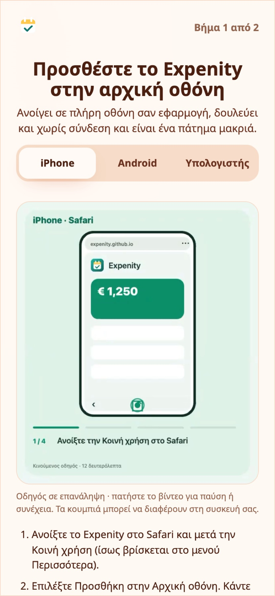

Εγκατάσταση στη συσκευή σας
Το Expenity είναι εφαρμογή ιστού. Μπορείτε να το χρησιμοποιείτε σε μια καρτέλα του προγράμματος περιήγησης ή να το προσθέσετε στην αρχική οθόνη, ώστε να ανοίγει σε πλήρη οθόνη με δικό του εικονίδιο, όπως κάθε άλλη εφαρμογή. Η πρώτη εκκίνηση το δείχνει με μια μικρή κίνηση. Τα βήματα είναι τα ίδια.

Δουλεύει στις συσκευές σας#
Το Expenity τρέχει σε σύγχρονο browser σε iPhone, iPad, κινητά και tablet Android, Windows, Mac και Linux. Δεν υπάρχει app store ούτε κάτι να κατεβάσετε: το ανοίγετε στον browser και μπορείτε να το εγκαταστήσετε ώστε να ανοίγει σε πλήρη οθόνη και να δουλεύει χωρίς σύνδεση.
| Συσκευή | Browser | Πώς εγκαθίσταται | Καλό να ξέρετε |
|---|---|---|---|
| iPhone και iPad | Safari | Κοινοποίηση και μετά Προσθήκη στην αρχική οθόνη | Οι ειδοποιήσεις με κλειστή εφαρμογή θέλουν την έκδοση της αρχικής οθόνης |
| Android | Chrome | Εγκατάσταση εφαρμογής | Η σάρωση αποδείξεων χρησιμοποιεί την κάμερα ή μια φωτογραφία από τη συλλογή |
| Windows, Mac, Linux | Chrome ή Edge | Το εικονίδιο εγκατάστασης στη γραμμή διευθύνσεων | Το Safari σε Mac μπορεί να το προσθέσει στο Dock. Το Firefox δουλεύει στον browser αλλά δεν εγκαθιστά web εφαρμογές σε υπολογιστή |
Κάποιες λειτουργίες χρειάζονται κάτι από τη συσκευή: τα passkeys θέλουν συσκευή που τα υποστηρίζει (τα περισσότερα κινητά και υπολογιστές των τελευταίων ετών), η σάρωση αποδείξεων θέλει κάμερα ή φωτογραφία και η εγκατάσταση θέλει browser που την υποστηρίζει. Αν λείπει κάποιο, το Expenity συνεχίζει να δουλεύει στον browser και σας λέει τι δεν είναι διαθέσιμο. Η διάταξη προσαρμόζεται μόνη της: κάτω μπάρα στο κινητό, πλαϊνή μπάρα σε tablet ή υπολογιστή.
Μπορείτε να δοκιμάσετε την πραγματική εφαρμογή μέσα σε πλαίσιο iPhone, iPad ή υπολογιστή και να αλλάξετε θέμα ζωντανά στον ιστότοπο του Expenity.
iPhone και iPad#
- Ανοίξτε το Expenity στο Safari.
- Πατήστε το κουμπί Κοινοποίηση.
- Επιλέξτε Προσθήκη στην οθόνη Αφετηρίας.
- Πατήστε Προσθήκη και ανοίξτε το Expenity από την αρχική οθόνη.
Παράδειγμα από την καθημερινότητα
Η Ελένη προσθέτει το Expenity στην αρχική οθόνη του iPhone της και το ανοίγει όπως κάθε άλλη εφαρμογή, χωρίς app store.
Android#
- Ανοίξτε το Expenity στο Chrome.
- Ανοίξτε το μενού (⋮).
- Επιλέξτε Εγκατάσταση εφαρμογής (ή Προσθήκη στην αρχική οθόνη) και επιβεβαιώστε.
Αν το πρόγραμμα περιήγησής σας το προσφέρει, το βήμα εγκατάστασης της εφαρμογής έχει κουμπί Εγκατάσταση τώρα που το κάνει για εσάς.
Υπολογιστής#
Στο Chrome ή το Edge, πατήστε το εικονίδιο εγκατάστασης στο δεξί άκρο της γραμμής διευθύνσεων ή ανοίξτε το μενού και επιλέξτε Εγκατάσταση του Expenity. Στο Safari σε Mac: Αρχείο → Προσθήκη στο Dock.
Offline#
Μετά την πρώτη επίσκεψη, τα αρχεία της εφαρμογής αποθηκεύονται στη συσκευή, οπότε το Expenity ανοίγει και χωρίς σύνδεση. Οι αλλαγές που κάνετε offline αποθηκεύονται στη συσκευή και συγχρονίζονται όταν επανέλθει η σύνδεση. Αν υπάρχει νέα έκδοση, ενημερώνεται την επόμενη φορά που θα ανοίξετε την εφαρμογή με σύνδεση.
Παράδειγμα από την καθημερινότητα
Σε μια πτήση χωρίς ίντερνετ, ο Πέτρος προσθέτει τα έξοδά του όπως συνήθως. Συγχρονίζονται όταν προσγειωθεί.
Πολλές συσκευές#
Συνδεθείτε με τον ίδιο λογαριασμό σε κάθε συσκευή. Τα πορτοφόλια, οι κινήσεις, οι λογαριασμοί, οι προϋπολογισμοί, οι στόχοι και οι ρυθμίσεις σας σάς ακολουθούν. Η εμφάνιση (θέμα, κινούμενα εφέ, γλώσσα) θυμάται ξεχωριστά σε κάθε συσκευή. Δείτε το Λογαριασμός και συγχρονισμός.
Παράδειγμα από την καθημερινότητα
Η Άννα χρησιμοποιεί το κινητό της εν κινήσει και τον υπολογιστή της για τις μηνιαίες αναφορές. Τα δεδομένα είναι τα ίδια και στα δύο.
Χρειάζεστε ακόμα βοήθεια; Δείτε τις FAQ, ή ρωτήστε στο GitHub.